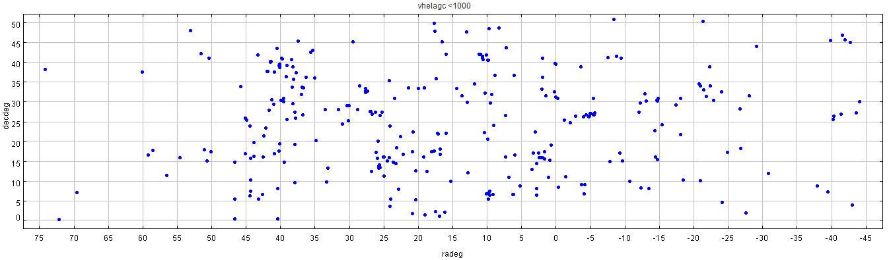
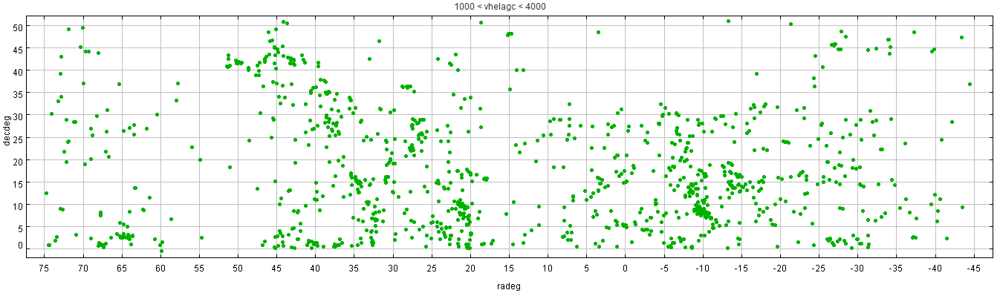
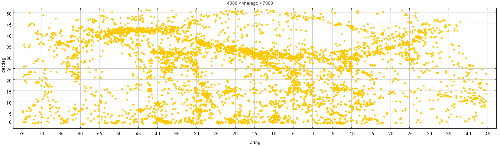
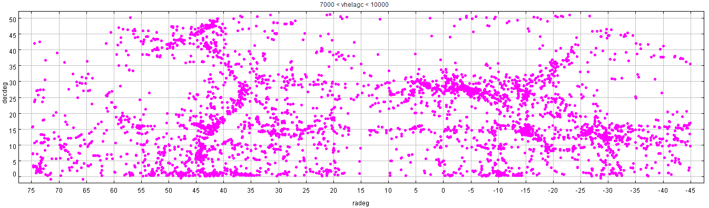
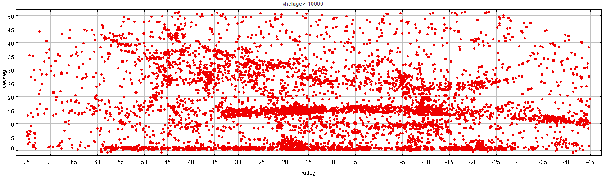

| Cluster | R.A.,Dec. | Distance Mpc |
Mean velocity km/s | Velocity dispersion km/s |
X-ray Lum. x 1044 erg/s | Pop. count* |
Spiral fraction* |
|---|---|---|---|---|---|---|---|
| Abell 2634 | 23h38m25.7s, +27o00'45" | 124.1 | 9409 | 125 | |||
| Abell 2666 | 23h50m56.2s, +27o8'41" | 105.5 | 8042 | 49 | |||
| NGC 383 group | 01h07m24.9s, +32o24'45" | 65.8 | 5098 | ||||
| NGC 507 group | 01h23m39.9s, +33o15'22" | 63.7 | 4934 | ||||
| Abell 262 | 01h52m46.8s, +36o09'05" | 68.1 | 5222 | 500 | 0.9 | 105 | 0.5 |
| Abell 397 | 02h56m58.9s, +15o57'02" | 131.4 | 9803 | ||||
| Abell 400 | 02h57m38.9s, +06o00'22" | 97.4 | 7315 | 89 | |||
| Perseus Cluster = Abell 426 | 03h19m47.2s, +41o30'47" | 71.3 | 5366 | 1000 | 14.95 | 190 | 0.1 |




